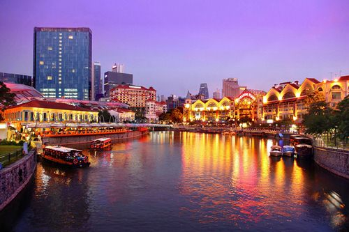
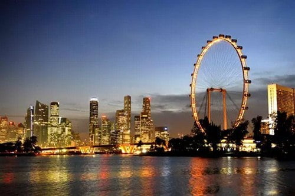
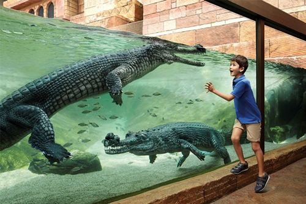

The Singapore River
The Singapore River is a spot where Singapore advanced history starts. At the point when Sir Stamford Raffles initially arrived at this spot, there were marshes, coolies, throws out and stockrooms. Presently the waterway is lined with verdant walkways, shops and diners. There are stream travels where one can take to appreciate the sights along the bank.
Toward the begin of the waterway bank, you can see a high statue of the water-heaving Merlion. This statue remains at a tallness of 8.3m and is a tourism symbol of Singapore. It was said that the old Singapore author, Sang NilaUtama, had recognized a lion on the lion around 14the century.
The waterway voyage will wend its approach to Boat Quay and Clarke Quay, going under a few authentic scaffolds and will take around 30 minutes. On the off chance that you had decided on a 45 minutes voyage, it will bring you promote down to Robertson Quay. Robertson Quay was loaded with distribution centers in the long time past days. Presently, the stockrooms were changed over to bars and eateries and some are supplanted by extravagance condo
The Singapore Flyer
Opened in 2008, the Singapore Flyer one of the most popular places to visit in Singapore, is a monster Ferris wheel in Singapore. Remaining at the edge of Marina and a noteworthy stature of 541ft, you can see the engineering of Marina Bay Sands and astounding perspective of Singapore all through the ride. There are 28 containers and every aerated and cooled case can take up to 28 individuals. The ride takes around 35 minutes and there is editorial on the points of interest all through the ride. There is additionally a three-story air terminal style working at the base of the wheel, including shopping and eating choices.
Singapore Zoo and River Safari
Path back to 1960s, the British had left a ragbag of family pets when they hauled out of Singapore. The 69 sections of land Singapore Zoo was formally opened in 1973 where it is currently home to more than 300 species, for example, tigers, orangutans, komodo mythical serpents, brilliant lion and jeopardized species. There is reproducing programs started for imperiled species, which had made some progress.
At the passageway, you can observe the creature appears and nourishing times posted with the goal that you can arrange the visit. There is a cable car administration (at additional charge) where you can take to visit the zoo. Waterway Safari, the main Asia stream themed safari park, was opened in 2013. The recreation center is partitioned into various zones – Mississippi, Congo, Nile, Gangers, Murray, Mekong and Yangtze waterways and one can walk around the recreation center and experience local untamed life to the waterways.
The recreation center is home toward the Southeast Asia’s biggest panda show, Jia and Kai and the world’s biggest freshwater aquarium. One can take a ride on the Amazon River Quest and to appreciate the pontoon enterprise that buoys past more than 30 types of creatures, which incorporates mammoth insect eating animal and panthers.